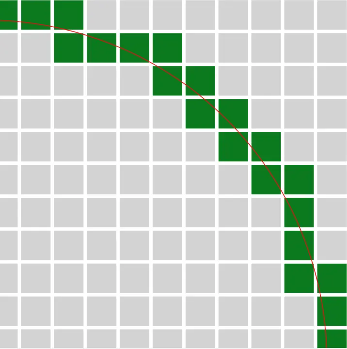

Easy Circles in Minecraft
With this tool, making circles in Minecraft has never been easier! You can hover over the graph to get the number of blocks required along a line, and click on a block to mark it as placed. This should help for building larger circles. Save the page for later if you like it!
Why another minecraft circle generator?
There are a few other similar tools on the web (like this popular one) but none I could find offered a way to see the number of blocks along a line.
How does it work?
The euclidian distance between cells and the centre of the grid is calculated and compared to the radius of the circle. This allows positioning blocks along the circumference of the circle.
